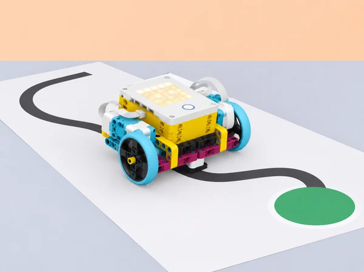

Moviment amb motiu
🏷️ Python: motors, posició i automatització
🌱 Situació, repte i intenció
Les proves se centren en com els motors responen a temps, velocitat, posició i graus, com es coordinen dos motors i quines variables físiques alteren el trajecte.
Aquesta proposta adapta la progressió de la unitat 2 Motors de LEGO Education Introduction to Python Programming · Course 1: control individual de motors amb paràmetres, moviments cap a posicions/quantitats definides, automatització d’una tasca, sincronització de dos motors i desplaçament d’un model sense rodes, trajecte amb passos i girs i feedback entre equips. La situació situa eixos objectius en un servei escolar fictici; no representa una solució real de mobilitat ni assumeix que el robot navegue sense supervisió.
🎯 Aprenentatges i vocabulari
- Identificar el motor com a actuador i descriure com el programa Python li envia ordres segons la biblioteca i la versió de l’app.
- Comparar moviment per temps, velocitat, posició i angle de gir del motor; entendre que graus de l’eix no equivalen automàticament a graus de gir del robot.
- Fer que dos motors actuen individualment i en parella; explicar què canvia quan giren alhora o en sentits diferents.
- Descompondre una tasca automàtica en inici, acció, espera, senyalització i aturada; escriure-la abans com a pseudocodi.
- Programar i traçar una seqüència de trams i girs per arribar a una fita en una pista coneguda.
- Calibrar una relació motor-distància amb la mateixa roda, superfície, càrrega i bateria, i documentar les fonts de variació.
- Fer proves repetides amb una variable canviada cada vegada, registrar diferències i decidir si un canvi millora el criteri triat.
- Donar feedback específic sobre el disseny i el codi sense prendre el control del projecte d’un altre equip.
Actuador: component que produeix moviment o una altra eixida. Velocitat: ritme de gir ordenat al motor. Posició: angle de l’eix respecte d’un referent definit. Graus: unitat angular per descriure una rotació. Calibratge: obtindre una relació de treball amb proves del muntatge real. Repetibilitat: semblança entre resultats d’assajos repetits sota condicions comparables.
# Python general per a descriure el pla; no controla motors SPIKE
trams = ["recte", "gir dret", "recte", "aturada"]
for tram in trams:
print("provar:", tram)Aquest fragment no és codi de motor. L’API exacta (ports, motor individual, parella, runloop, posició, velocitat i frenada) depén de la versió local de l’app SPIKE. Consulteu-ne la Knowledge Base i proveu les ordres amb la base suspesa o en una pista segura abans d’adaptar-les.
🧰 Materials i preparació
Un set SPIKE Prime 45678 per equip, hub carregat, dos motors, rodes i peces Technic per a una base mòbil baixa o un mecanisme acotat, dispositiu amb editor Python i consola, cinta de paper, cartó per a fites i topalls tous, regla, transportador opcional, fitxa lleugera de missatgeria, diari d’enginyeria i temporitzador. Per al repte de moviment sincronitzat sense rodes, oferiu una construcció articulada lleugera de baixa altura feta amb les peces de la caixa;
no cal que imite un animal ni reproduïsca cap model oficial.
Trieu una zona plana sense vores, escales ni trànsit; marqueu carrils amples i una zona de parada. Càrrega i distància han de ser lleugeres i curtes. Abans de començar, comproveu la bateria, el port i orientació dels motors, les rodes lliures, el mecanisme sense fricció i una ordre d’aturada. Ajusteu velocitat baixa i limiteu el recorregut; ningú no sosté la base mentre els motors giren.
Prepareu una base de referència i tres distàncies de prova, però deixeu que l’alumnat calibre el seu propi prototip.
Rols rotatius de Python/prova, construcció/seguretat i mesura/registre. Cada equip manté una configuració de prova fixa durant una comparació i escriu quan ha canviat superfície, rodes, muntatge o càrrega. No compareu resultats de robots diferents com si les seues magnituds foren transferibles.
📅 Seqüència didàctica
El motor respon a temps i velocitat (45 min)
Fase 1 · Activem i prediem
Fase 2 · Explorem i construïm
Prova aïllada (10 min): amb la base elevada i fixada, executeu amb supervisió una ordre breu a velocitat baixa; comproveu quin motor i port responen. Atureu abans de canviar cables o configuració.
Fase 3 · Expliquem i registrem
Fase 4 · Apliquem i millorem
Interpretació (7 min): representeu velocitat ordenada i distància observada en una taula; distingiu una ordre del programa d’una mesura del trajecte.
Fase 5 · Comprovem i reflexionem
Posició, camí curt i graus (45 min)
Fase 1 · Activem i prediem
Pregunta (5 min): si un eix està en una posició coneguda, quina ordre el porta a una altra posició amb menys moviment?
Fase 2 · Explorem i construïm
Estació segura (8 min): useu un motor sense càrrega amb una marca visual de referència a l’eix; anoteu posició inicial i no poseu dits prop de l’eix.
Fase 3 · Expliquem i registrem
Fase 4 · Apliquem i millorem
Transferència a la roda (7 min): calculeu circumferència amb mesura aproximada i compareu-la amb la distància que avança una rotació; expliqueu per què lliscament, pressió i diàmetre real alteren el resultat.
Fase 5 · Comprovem i reflexionem
Automatitzar una acció útil (45 min)
Fase 1 · Activem i prediem
Fase 2 · Explorem i construïm
Ideació/mecanisme (10 min): dibuixeu dues alternatives mecàniques i valoreu estabilitat, nombre de peces, recorregut i risc de pinçament.
Fase 3 · Expliquem i registrem
Fase 4 · Apliquem i millorem
Fase 5 · Comprovem i reflexionem
Dos motors, un moviment coordinat (45 min)
Fase 1 · Activem i prediem
Fase 2 · Explorem i construïm
Fase 3 · Expliquem i registrem
Fase 4 · Apliquem i millorem
Fase 5 · Comprovem i reflexionem
Conversa (5 min): justifiqueu per què un robot sense rodes pot avançar i quins límits presenta el vostre prototip.
Una ruta amb passos i girs (45–90 min)
Fase 1 · Activem i prediem
Encàrrec i criteris (10 min): planifiqueu un lliurament fictici des de la biblioteca a tres parades de maqueta. L’èxit significa passar per l’ordre correcte de fites i quedar dins d’una zona final àmplia; no s’exigeix precisió d’un servei real.
Fase 2 · Explorem i construïm
Mapa i pseudocodi (10 min): dibuixeu quadrícula de trams, girs i pauses. Feu recompte d’ordres, determineu quin motor-parella s’utilitza per recta i com es genera el gir amb diferència de girs entre rodes.
Fase 3 · Expliquem i registrem
Calibratge (15 min): feu una recta d’una longitud curta amb tres proves i estimeu graus de roda necessaris; feu un gir de quart aproximat i mesureu orientació amb quadrícula/transportador. Useu relacions com a estimacions específiques del vostre robot, no constants universals.
Fase 4 · Apliquem i millorem
Fase 5 · Comprovem i reflexionem
Diagnòstic (10 min): si se’n va de la marca, canvieu una variable per iteració (graus, alineació, velocitat o superfície); documenteu quin error disminueix. Si es disposa de més temps: repetiu tres vegades la ruta completa i compareu dispersió i causes, sense fer una cursa de velocitat.
Prova entre equips i feedback de disseny (30–45 min)
Fase 1 · Activem i prediem
Fase 2 · Explorem i construïm
Fase 3 · Expliquem i registrem
Fase 4 · Apliquem i millorem
Fase 5 · Comprovem i reflexionem
🧪 Evidències i avaluació
El dossier conté esquema de maquinari i ports, registre de versió de l’app/API, diagrama de posicions, pseudocodi de ruta, codi Python anotat, prediccions, taula de temps/velocitat/graus i distància mesurada, proves del mecanisme automatitzat, comparació de crides individuals i de parella, mapa de ruta, tres resultats finals, feedback, canvi seleccionat i explicació de límits. El producte és una maqueta de lliurament i una nota tècnica d’una pàgina que separa instrucció, resposta física i evidència.
Avalueu amb quatre criteris:
Un recorregut que no arribe a la fita encara pot aportar evidència rigorosa si està ben diagnosticat.
♿ Participació, accessibilitat i seguretat
Oferiu pista impresa, simulació de moviments en paper i accés a consola amb lectura compartida. Distribuïu rols entre codi, construcció, mesura i comunicació, i feu-los rotar. Permeteu més temps i trams grans; la velocitat no és criteri d’èxit. Useu carrils delimitats, zona de parada, càrrega tova, distància curta i baixa potència; apagueu motors abans d’ajustar eixos, rodes o cables. Manteniu dits, cabells i roba lluny d’elements en moviment.
Recupereu totes les peces després de la prova i no useu passadissos, rampes altes o escales.
🔗 Referents i adaptació
Adapta Unit 2 Motors del curs LEGO Education Introduction to Python Programming · Course 1. El PDF oficial consultat confirma les lliçons Hopper Run (dos motors simultanis i model sense rodes) i Race Day (programa amb seqüència de passos i girs i ús de la parella de motors), a més de la sessió de feedback Ideas to Help with Race Day. La progressió de motors individuals, posició i automatització s’ha contrastat amb els objectius indexats del pla oficial;
les funcions de Python s’han de validar en l’app del centre. El repte, el context, el guió docent, els fulls de registre i la imatge són propis; no es reprodueixen instruccions de construcció LEGO ni s’afirma que la maqueta completa siga un model oficial.